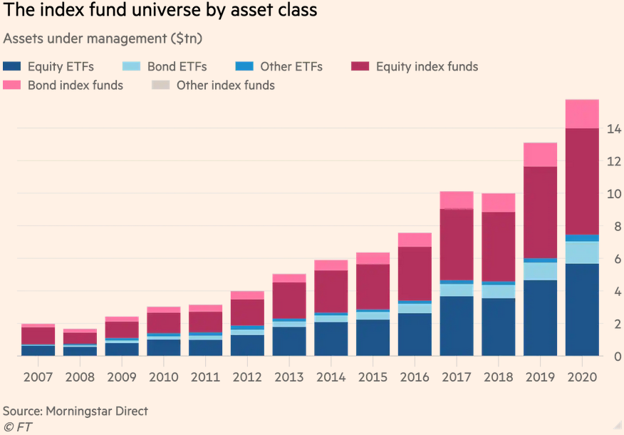
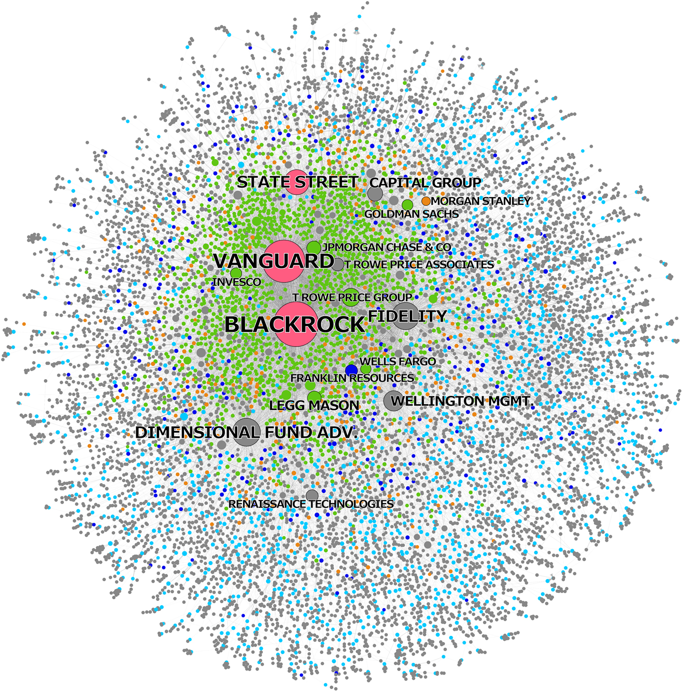

6 Index Funds
Financial markets need indices. There are over three million of them, according to the Index Industry Association.
Planet Tracker (2021) Sustainability-Driven Disruption (pdf)
6.1 ETF
Fitchner (Tweet)
Global passive assets hit $15tn as ETF boom heats up
The relentless growth of index funds in on picture! This growth is concentrating power in the hands of giant asset managers such as BlackRock, Vanguard but also in index providers like MSCI.

Figure: FT
Please use the sharing tools found via the share button at the top or side of articles. Copying articles to share with others is a breach of FT.com T&Cs and Copyright Policy. Email licensing@ft.com to buy additional rights. Subscribers may share up to 10 or 20 articles per month using the gift article service. More information can be found at https://www.ft.com/tour.
https://www.ft.com/content/7d5c2468-619c-4c4b-b3e7-b0da015e939d
Assets under management in exchange traded funds are eclipsing traditional index-tracking mutual funds for the first time, after the global passive investment industry vaulted past $15tn in assets last year.ETFs stood at $7.71tn under management at the end of last year — narrowly behind index mutual funds at $7.76tn — according to data compiled for the FT by the Investment Company Institute.
Since then, ETFs are likely to have nosed ahead thanks to powerful inflows this year. Comprehensive global data comes with a lag, but consultancy ETFGI calculates that assets under management in ETFs stood at $8.33tn at the end of March.
The ascent of ETFs past their older cousins reflects the speed at which they have reshaped the investment industry.
“People are increasingly building entire investment strategies using only ETFs. The choices you have vastly outstrip what you have in traditional index funds,” said Todd Rosenbluth, head of ETF and mutual fund research at CFRA.
Traditional passive mutual funds accept investor money or redemptions at the end of each day, whereas ETFs, first invented two decades later in the 1990s, trade like stocks on an exchange, letting investors hop in and out whenever they want.
The pandemic-triggered market upheaval of March 2020 failed to dent their growth, with bond ETFs now also quickly gaining ground among investors who were pleasantly surprised by their resilience in the turmoil.
Not everyone in the industry has been thrilled by the dramatic rise of ETFs. Some critics worry they lead investors to overtrade, which harms returns and exacerbates the volatility of markets.
Jack Bogle, the founder of Vanguard, introduced the first index mutual fund for ordinary savers, but was infamously hostile to ETFs and disliked when his old company entered the industry after he retired. However, he conceded before he died in 2019 that ETFs had changed “not only the nature of indexing, but also the entire field of investing”.
Others argue that the flexibility of ETFs means securities that would normally be unavailable to ordinary investors — such as complex derivatives — can be easily packaged and sold to everyone without any restrictions.
6.2 Big Three
Fitchner Abstract
Since 2008, a massive shift has occurred from active toward passive investment strategies. The passive index fund industry is dominated by BlackRock, Vanguard, and State Street, which we call the “Big Three.” We comprehensively map the ownership of the Big Three in the United States and find that together they constitute the largest shareholder in 88 percent of the S&P 500 firms. In contrast to active funds, the Big Three hold relatively illiquid and permanent ownership positions. This has led to opposing views on incentives and possibilities to actively exert shareholder power. Some argue passive investors have little shareholder power because they cannot “exit,” while others point out this gives them stronger incentives to actively influence corporations. Through an analysis of proxy vote records we find that the Big Three do utilize coordinated voting strategies and hence follow a centralized corporate governance strategy. However, they generally vote with management, except at director (re-)elections. Moreover, the Big Three may exert “hidden power” through two channels: First, via private engagements with management of invested companies; and second, because company executives could be prone to internalizing the objectives of the Big Three. We discuss how this development entails new forms of financial risk.
6.2.1 The age of asset management capitalism
Fitchner Memo
In the early 1930s, Adolf Berle and Gardiner Means famously coined the phrase of the “separation of ownership and control,” meaning that there were not anymore blocks of ownership large enough to wield effective control over U.S. publicly listed corporations. 8 The dispersion of corporate ownership that Berle and Means observed empirically represented a markedly changed situation compared to the first decades of the twentieth century, when most large corporations had been owned and controlled by banks and bankers—what Rudolf Hilferding referred to as Finanzkapitalismus (finance capitalism). 9 Dispersed ownership however entailed that instead of the owners, it was the managers and directors who wielded control. This, in turn, led to the recognition of the principal-agent problem that underlies modern corporate governance theory: Given their collective action problem, how can the suppliers of capital (principals) ensure that the managers (agents) act in their best interests? In response to this question, corporate governance regulation has progressively shifted towards a more powerful position for shareholders. The extent to which the separation of ownership and control took shape has been a debate ever since. Nonetheless, there is an overwhelming consensus that since the second half of the twentieth century corporate ownership in the United States is by and large fragmented and dispersed.
Early signs of a fundamental change in the organization of corporate ownership emerged in the late twentieth century. Useem signaled the growing importance of mutual funds in the early 1990s and argued that we have moved from shareholder towards investor capitalism. 11 After the turn of the century and more than seven decades after Berle and Means, Davis went a step further and argued that the rapid rise of assets invested by actively managed mutual funds in equity markets and the ensuing re-concentration of corporate ownership led to a “new finance capitalism.” 12 Davis found that by 2005 active mutual funds had accumulated 5 percent blockholdings in hundreds of publicly listed U.S. companies. Being the single largest shareholder thus gave the biggest mutual funds—such as his running example Fidelity—potential power over the corporate governance of these listed companies by means of dominating corporate elections.
However, despite this great potential power, actively managed mutual funds at that time did not seek to influence corporate decision-making. Davis mentions three reasons for this. First, he points out that owners holding more than 10 percent of voting rights are considered as “insiders,” which significantly restricts their trading possibilities. Second, actively managed mutual funds are faced with potential conflicts of interest because the firms they are invested in are often also their clients. Particularly eminent is this where mutual funds are large providers of pension fund management for corporations. This curbs the willingness of funds to pursue shareholder activism. 13 Third, and more general, shareholder activism is always costly—and the costs are borne only by the activist, while the benefits are enjoyed by all shareholders. Hence, Davis concluded that “networks of concentrated yet liquid ownership without control seem to be the distinctive feature of the new finance capitalism.” 14 Davis pointed out that this observed new finance capitalism is historically unique, but also cautiously concluded that its durability remains to be seen. One decade later, we can safely conclude that the re-concentration of corporate ownership was not a temporary market anomaly, but a fundamental reorganization of the system of corporate governance. However, the period 2005–15 is also one of significant transformation of the new finance capitalism.
A remarkable feature of the passive index fund industry is its high level of concentration. In the ETF segment, the market shares in December 2016 have been 37 percent for BlackRock, 18.5 percent for Vanguard, and 15.5 percent for State Street, respectively. 20 Hence, together these three firms stand for a stunning 71 percent of the entire ETF market; all other ETF providers have market shares below 3.3 percent. Data about market shares in index mutual funds are not publicly available, but it seems clear that Vanguard dominates this segment with probably at least 75 percent market share.
BlackRock, Vanguard, and State Street dominate the passive index fund industry. Together they manage over 90 percent of all Assets under Management (AuM) in passive equity funds.
Although the Big Three have in common that they are passive asset managers, they are quite different in their own corporate governance structures. BlackRock is the largest of the Big Three—and represents the biggest asset manager in the world. At mid-2016, BlackRock had U.S. $4.5 trillion in assets under management. 23 BlackRock is a publicly listed corporation and thus finds itself under pressure to maximize profits for its shareholders. Vanguard—with U.S. $3.6 trillion in assets under management in mid-2016—is currently the fastest growing asset manager of the Big Three. In 2015, the group had inflows of U.S. $236 billion, the largest annual flow of money to an asset managing company of all-time. 24 The main reason for the high growth of Vanguard is that it has the lowest fee-structure in the entire asset management industry. Vanguard is mutually owned by its individual funds and thus ultimately by the investors in these funds. Consequently, the group does not strive to maximize profits for external shareholders but instead operates “at-cost,” which allows Vanguard to offer the lowest fees in the industry. Vanguard pioneered passive investing by creating the “First Index Investment Trust” in 1975, however this investment approach was attacked as “un-American” at the time. 25 State Street is slightly smaller than BlackRock and Vanguard, but still one of the largest global asset managers. In mid-2016, it had U.S. $2.3 trillion in assets under management.
A passive investment strategy leads to the question of why passive investors would be interested at all to concern themselves with corporate governance at the level of individual firms. If a fund holds—for instance—500 stocks the risk of any individual stock will be irrelevant. Indeed the incentive structure of passive index fund managers is such that they are rewarded more for keeping the costs low than for improving firm governance.
The decentralized attribution of ownership in separate funds and ETFs may hamper a centralized voting strategy in at least two ways. BlackRock for instance has more than 200 mutual funds and equity ETFs as well as several closed end equity funds and hedge funds—all of which could have positions in a particular firm. These portfolios may have different interests when it comes to shareholder vote. Even more differences occur because BlackRock holds some shares in short positions. Any vote that helps the long positions in BlackRock will hurt the short positions. So which way will BlackRock vote? These decentralized ownership structures may also hamper the ability to systematically use the voting power at all as it demands a serious coordination effort on behalf of the asset managers.
The risks of individual stocks are largely irrelevant to their business model.
While active investors can and will sell shares when they observe or anticipate diminishing (future) returns, passive investors are generally “stuck.” This means that their main interest is not short or medium term value creation, as is the case for most investors. Instead, their main interest is in long-term value creation.

Asset management capitalism and new financial risk
Stealth Socialism
The recent rise of the Big Three has already led to serious concerns that “it cannot be good for capitalism.” 59 A first and major concern is that a further increasing market share of passive index funds could impair efficient price finding on equity markets, as the proportion of actively traded shares would continue to shrink. This concern already led some to polemically argue that because passive funds take active fund managers out of the role of allocating capital, the outcome is “stealth socialism.” 60 One of the most outspoken regulators concerning this topic is Andrew Haldane from the Bank of England. In a speech in 2014, he argued that we have potentially entered the “age of asset management” due to enormous growth of assets under management in the last decades and the relative retreat of banks after the global financial crisis. 61 He sees indications that passive investing could increase investor herding and thus lead to more correlated movements of markets. In this way, passive index funds could intensify the pro-cyclicality of financial markets.
A second concern regarding increased risk relates to the practice of securities lending. Passive asset managers regularly lend out shares to short-sellers to generate additional income. According to Cetorelli, BlackRock has increased its securities lending operations significantly in recent years. Indemnification of securities on loan by BlackRock more than tripled from U.S. $40 billion in 2012 to over U.S. $130 billion in 2014, while for State Street the value was even U.S. $320 billion one year before. 62 Such securities lending—like most activities of large passive asset managers—seems to be unproblematic in good times, but could impair liquidity significantly in times of serious market stress. These developments have led global regulators to examine whether large asset managers, such as BlackRock, should be labeled “systemically-important financial institutions.” On the other hand, concerns about reduced liquidity due to passive investment strategies may be moderated by the observation that ETFs themselves have become the object of active trading strategies.
The active trading of passive index funds may have far reaching consequences. When passive index funds do indeed become the main building blocks for active investment, we are confronted with a fundamental reorganization of contemporary corporate governance. Because the voting rights reside with the asset managers who supply the passive index funds, and because the passive index fund industry is concentrated in the hands of the Big Three, this effectively means that the separation of ownership and control may potentially come to an end. After all, the active investors who trade with the passive building blocks no longer have access to the voting rights. And the Big Three accumulate the voting rights without much concern for short-term considerations. What is more, their interests are not restricted to the well-being of any particular firm. As mentioned, passive index fund managers arguably have little interest in fierce competition between their co-owned corporations, because this constitutes a zero-sum (or even negative-sum) game for them. Rather, they have industry or market-wide interests. Such developments may lead to a situation where the large owners of corporate businesses have limited incentives to engage with firm-level corporate governance beyond fulfilling their fiduciary obligations.
Fitchner Conclusion
Since 2008, an unprecedented shift has occurred from active towards passive investment strategies. We showed that the passive index fund industry is dominated by BlackRock, Vanguard, and State Street. Seen together, these three giant, passive asset managers already constitute the largest shareholder in at least 40 percent of all U.S. listed companies and 88 percent of the S&P 500 firms. Hence, the Big Three, through their corporate governance activities, could already be seen as the new “de facto permanent governing board” for over 40 percent of all listed U.S. corporations. 65
An original and compressive mapping of blockholdings revealed that in the United States the market for corporate control shows unprecedented levels of concentrated corporate ownership. The Big Three occupy a position of “structural prominence” in this network of corporate governance. We furthermore found that while the proxy voting strategies of the Big Three show signs of coordination, they by and large support management. However, BlackRock, Vanguard, and State Street may be able to influence management through private engagements. Moreover, management of co-owned companies are well aware that the Big Three are permanently invested in them, which makes it possible that through this “disciplinary” effect they may internalize some common objectives of the passive index managers. On balance, we find significant indications that the Big Three might be able to exert forms of power over the companies held in their portfolios that are hidden from direct inspection.
When Vanguard pioneered its index fund concept in the mid-1970s it was attacked as “un-American,” exactly because they held shares in all the firms of an index and did not try to find the companies that would perform best. Therefore, the new tripartite governing board of BlackRock, Vanguard, and State Street is potentially conflicting with the image of America as a very liberal market economy, in which corporations compete vigorously, ownership is generally fragmented, and capital is generally seen as “impatient.” 66 Benjamin Braun has argued that passive investors may, in principle, act as “patient” capital and thus facilitate long-term strategies. 67 Hence, the Big Three have the potential to cause significant change to the political economy of the United States, including through influencing important topics for corporations, such as short-termism versus long-termism, the (in)adequacy of management remuneration, and mergers and acquisitions.
We reflected on a number of anticompetitive effects that come with the rise of passive asset management, which could have negative consequences for economic growth and even for economic equality. As well, we signaled how the continuing growth of ETFs and other passive index funds can create new financial risk, including increased investor herding and greater volatility in times of severe financial instabilities. The ongoing rise of the Big Three and the concomitant fundamental transformation of corporate ownership today clearly warrants more research to examine their impact on financial markets and corporate control—in the United States but also internationally.
6.4 Direct Indexing
Planet Tracker
An oligopoly of major index providers – MSCI, FTSE Russell, S&P Dow Jones and Bloomberg – are being challenged by innovative competitors. The index ‘majors’ are some of the most powerful players in the financial markets. If the drive towards self- indexing continues – and financial institutions have been positioning themselves for such a move – investors of all types will be able to choose from a much wider range of products. The sustainable investor could be the catalyst for this change, providing them with the opportunity to invest in line with their personal principles, rather than taking the templates on offer. And for the braver ones, direct indexing is becoming more widespread. As for the corporates, being included in a popular sustainable index could provide them with a cost of capital advantage. Things are looking up for sustainable investors and sustainable companies
The index production landscape is evolving to meet the demands of sustainability-based investment products. Declining fund fees, rising competition in index production and demand for greater consumer choice have all arrived at the same time as the upswing in sustainable investing.
There are four main index providers for ETFs – MSCI, FTSE Russell, S&P Dow Jones and Bloomberg. There is also another tier of index providers across asset classes which are challenging this oligopoly. These include CRSP, Morningstar, Qontigo and Solactive.
Solactive sells ‘tailormade’ solutions as well as being ‘dedicated to developing customized indices’. Growing competition also exists from industry participants, including asset managers and investment banks, that create their own indexes’
MSCI reveals dependency on the largest financial institutions with BlackRock accounting ‘for 11.0% of our total revenues’.
Two interesting examples of notable increases in index demand: fixed income and ESG (environmental, social and governance). In 2019, fixed income indices rose 7% year-on-year, driven by Europe, the Middle East and Africa (EMEA). ESG indices rose by 14% across both equities and fixed income. The IIA snapshot for 2020 reveals continued growth in fixed income indices of 7% but a leap in ESG demand by 40%.
ESG investing is ‘the growth opportunity of the century’.
If we then move the trillions of dollars of money away from traditional indexes into these more sustainable or ESG-based indexes, that’s going to shape finance in a substantial way.
Testing further customisation with STOXX iStudio, which provides the customer with the tools to build their own index. This suggests Deutsche Börse is willing to become a disruptor.
So, are the index majors caught between a rock and a hard place? If they provide ever more customisation, they undermine the profitability of their existing business model, especially in relation to their most popular indices – e.g. S&P 500, FTSE 100, MSCI World etc. But there’s a further issue. Will increasing customisation, driven by sustainable demand, lead to greater regulatory scrutiny? Some regulators have already expressed concerns. In 2018, the EU Benchmark Regulation (BMR) was introduced amid fears about the accuracy and integrity of indices used as benchmarks in EU markets, following the LIBOR g scandal. BMR imposes requirements for organizations that provide, contribute data to and reference financial benchmarks. 30 To further complicate the issue, regulators will need to ensure that the largest Asset Managers, which may sit on Advisory Boards of the Index Providers or provide advice, are unable to exert influence over the formulation of indices.
Index providers are viewed as data publishers by the SEC, rather than investment advisers. Should there be a regulatory distinction between broad indices and the customised varieties?
Presently, it appears that only financial institutions and ultra-high net worth individuals (UHNWIs) are reaping the full customisation benefits. Many retail investors are left with limited options when using the fund platforms of the major financial institutions.
Perhaps the most exciting development for supporters of sustainability and ESG strategies may be an unintended consequence. If corporate management teams become convinced that the inclusion of their company in an index is one of the most important drivers of a share price, then there could be a scramble by executives to adopt more sustainable and ESG strategies, in order to win access to these indices and possibly lower their cost of capital. A race to the top that would be welcomed by many.
Planet Tracker (2021) Sustainability-Driven Disruption (pdf) Press Release